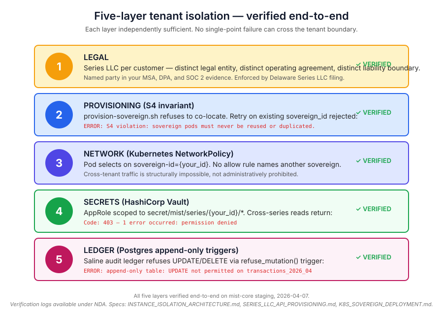
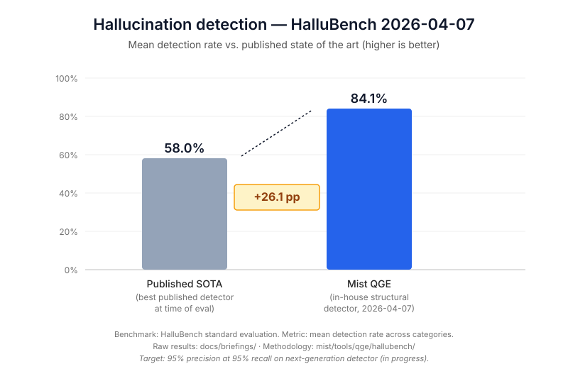

Five guarantees nobody else in this space can make — backed by verification logs, published benchmarks, and a direct enterprise commercial structure that flows through to your own compliance posture.
Every Mist Dynamics enterprise customer gets their own Series LLC — a distinct legal entity you can name in your MSA, DPA, and SOC 2 evidence chain. The legal separation is enforced at five independent technical layers, any one of which is sufficient to prevent cross-customer contamination. No shared-tenant AI vendor on the market offers this.

What this means in procurement terms: your vendor contract names a specific legal entity that no other customer shares. Your DPA flow-down is clean. Your data never traverses infrastructure where another customer could reach it, not because the software is correct but because the layers that would have to fail are independent and each is separately verified.
Every other AI infrastructure vendor ships one verification layer — cross-model voting, or a single-model detector. Each of those, on its own, has a specific blind spot. Mist runs both layers on every verified query. The combination catches a failure class called shared hallucinations — cases where three independent models produce the same confident fabrication because their training data overlaps — that no single-layer system can detect.

The layers: Prism dispatches your prompt to three architecturally distinct models (OpenAI, Anthropic, Google) in parallel and produces the full audit trail. QGE is our in-house structural hallucination detector — no external documents, no RAG, no self-reflection prompting. It analyzes the output itself for statistical signatures of fabrication. When both layers agree an output looks like fabrication, Mist returns "I do not know" and logs the case for review. A system that knows when it does not know is worth more than one that is usually right.
Mist Dynamics holds direct enterprise agreements with OpenAI, Anthropic, Google, Mistral, DeepSeek, and every other model provider in our routing table. Not retail API accounts. Not high-volume developer accounts. Enterprise agreements with named commercial terms, downstream metered access rights, and DPA flow-down obligations.
This is the legal foundation of the entire business model. Most provider Terms of Service explicitly prohibit using a retail account to resell access. The exception is an enterprise agreement that permits downstream commercial deployment — and that's the structure we operate under. Vendors who aggregate retail accounts are one ToS change away from account termination cascading across their whole customer base. We are not.
What this means for your audit: the liability chain from provider → Mist Dynamics → your MSA is clean and defensible. Three documents, one auditable relationship, each with a named legal counterparty.
Every competitor treats verification as a single mode: on or off. Mist ships six distinct execution protocols, each with explicit cost and latency trade-offs, selectable per request.
| Protocol | Mechanism | Cost | Latency | Use when |
|---|---|---|---|---|
| Single | One model | 1× | 1× | High throughput, low stakes |
| Probe | One model + re-read | 1.5× | 1.3× | Spot-checking a new model |
| Prism | 3-model parallel + QGE | 3–4× | 2–3× | Standard verified mode |
| Debate | Affirmative/negative + judge | 5–7× | 3–5× | High-stakes reasoning |
| Parliament | 8–50 model deliberation | 10–50× | 8–20× | Irreversible decisions |
| Cascade | Adaptive multi-round | Variable | Variable | Unknown depth |
Your autocomplete endpoint runs Single. Your legal research endpoint runs Prism. Your court filing runs Debate. Same infrastructure, six products, selected per request via a single verification field. You pay for depth only where the math justifies it.
This is the guarantee that makes the other four credible. Every AI vendor claims benchmarks; few publish negative results. We do.
We ran our own cross-model accuracy benchmark on Prism. We expected a measurable improvement over single-model output on factual recall. The benchmark returned 0.0% accuracy delta across 35 questions (5 easy + 15 hand-curated tail facts). Current frontier models are saturated on knowable facts — they don't hallucinate on questions Wikipedia has, and they don't disagree with each other on those questions either. The simple "Prism reduces hallucinations" pitch was falsified.
We published the negative result. We updated the spec (docs/specs/VERIFICATION_EVIDENCE_AUDIT.md is on version 2 for exactly this reason). We rewrote our marketing content to match. We pivoted to the Prism + QGE combined story — where the value is catching shared hallucinations, a failure class the single-layer pitch could not honestly claim.
This is the only AI vendor pitch where you can read the benchmark that killed the simple version of the claim, alongside the benchmark that supports the more defensible version. If we hid failures, you wouldn't be able to trust our successes. That we didn't is the answer.
Beyond benchmarks, we publish dead-end research papers (docs/papers/DEAD_END_*.md), spec drift corrections with explicit callouts, and revision history on every document where we changed our mind. Sophisticated technical buyers notice the difference. That's the buyer we want.
Every persona has a different Tier 1 concern. We wrote a deeper pitch for each.
CISO, compliance, general counsel, DPO in legal, medical, financial, or government.
Technical architects, senior and staff engineers running the POC and reading the benchmarks themselves.
The team whose signoff the whole enterprise deal depends on. Vendor questionnaires, DPAs, SOC 2 mapping.
CTO, VP Eng, Chief AI Officer picking infrastructure that has to still be right in 18 months.
Research computing, PIs with large AI budgets, scientific publishing platforms. Reproducibility matters.
One page, ~700 words. The whole story condensed for cold outreach or executive review.
Bring one query where a confident wrong answer would hurt your business. We run it through Prism + QGE on a staging instance in under an hour and show you the audit trail. No slides, no pitch deck, just the pipeline running on your actual problem.
Talk to Sales